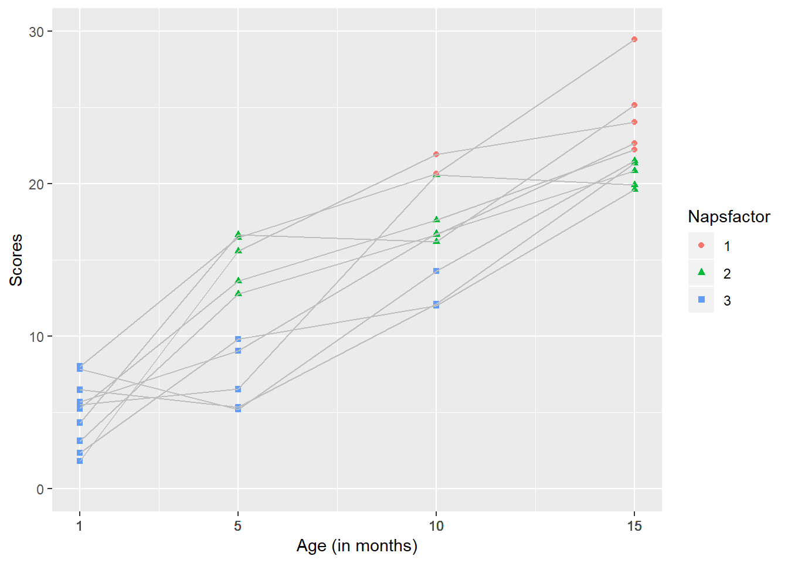

Using the lme function from the nlme package: A brief tutorial
mhorger
May 4, 2019
nlme is a package for fitting and comparing linear and nonlinear mixed effects models
It let’s you specify variance-covariance structures for the residuals. It is well suited for repeated measure or longitudinal designs.
Similar packages
One similar package is lme4. It allows you to fit outcomes whose distribution is not Gaussian and allows for crossed random effects. It stores data more effiently due to the use of sparse matrices. It is more suited for clustered data sets.
What’s included?
nlme includes sample data, statistics, matrices, and a lattice framework.
Using the nlme package
Begin by installing the nlme package
Found on the CRAN repository
Website: https://svn.r-project.org/R-packages/trunk/nlme
install.packages("nlme")Load the package
library(ggplot2)
library(nlme)
library(dplyr)##
## Attaching package: 'dplyr'## The following object is masked from 'package:nlme':
##
## collapse## The following objects are masked from 'package:stats':
##
## filter, lag## The following objects are masked from 'package:base':
##
## intersect, setdiff, setequal, unionlibrary(knitr)## Warning: package 'knitr' was built under R version 3.5.3Try the lme function
This generic function fits a linear mixed-effects model in the formulation described in Laird and Ware (1982) but allowing for nested random effects. The within-group errors are allowed to be correlated and/or have unequal variances.
Some important considerations
Need repeated measures from a single subject The data may be longitudinal, but they also may not.
Can account for correlations within individuals within the random effects
Uses maximum likelihood estimates
The arguments for this function
lme(model, data, fixed, random, groups, start, correlation, weights, subset, method, na.action, naPattern, control, verbose)
An example: Does the number of daily naps impact infant performance on a thing?
#creating a data set
Subs <- rep(c(seq(1:10)), 4)
Month <- c(rep(c(1), 10), rep(c(5), 10), rep(c(10), 10), rep(c(15), 10))
Naps <- c(rep(c(3), 10), 2, 3, 2, 1, 2, 3, 2, 3, 2, 3, 2, 2, 2 ,2, 3, 3, 2, 2, 1, 2, 3, 1, 2, 2, 1, 1, 2, 1, 2, 1 )
Napsfactor <- as.factor(Naps)
#Let's assume that infants' performance will get better with time. I altered the possible sampling distributions to reflect this.
scores <- c(runif(10, 1, 7), runif(10, 8, 15), runif(10, 16, 22), runif(10, 23, 30))
dataset <- data.frame(Subs, Month, Naps, scores, Napsfactor)
#Data should be set up in long format and look similar to this.
print(dataset)## Subs Month Naps scores Napsfactor
## 1 1 1 3 2.019870 3
## 2 2 1 3 2.992850 3
## 3 3 1 3 6.332282 3
## 4 4 1 3 4.663238 3
## 5 5 1 3 4.324386 3
## 6 6 1 3 2.958888 3
## 7 7 1 3 1.141883 3
## 8 8 1 3 2.613526 3
## 9 9 1 3 6.551983 3
## 10 10 1 3 6.988533 3
## 11 1 5 2 12.176890 2
## 12 2 5 3 8.787651 3
## 13 3 5 2 9.902380 2
## 14 4 5 1 8.664020 1
## 15 5 5 2 11.213740 2
## 16 6 5 3 13.588646 3
## 17 7 5 2 14.949873 2
## 18 8 5 3 14.853920 3
## 19 9 5 2 10.050598 2
## 20 10 5 3 9.016636 3
## 21 1 10 2 17.181183 2
## 22 2 10 2 16.348284 2
## 23 3 10 2 16.272719 2
## 24 4 10 2 16.708106 2
## 25 5 10 3 19.005464 3
## 26 6 10 3 19.824947 3
## 27 7 10 2 19.237244 2
## 28 8 10 2 18.788536 2
## 29 9 10 1 17.481989 1
## 30 10 10 2 18.515150 2
## 31 1 15 3 28.266533 3
## 32 2 15 1 23.384451 1
## 33 3 15 2 27.038530 2
## 34 4 15 2 23.697672 2
## 35 5 15 1 27.154598 1
## 36 6 15 1 24.406893 1
## 37 7 15 2 24.804519 2
## 38 8 15 1 28.661944 1
## 39 9 15 2 26.528601 2
## 40 10 15 1 27.008137 1demos <- dataset %>%
group_by(Month, Naps) %>%
summarise(mean_score = mean(scores, na.rm=TRUE))This is a longitudinal three level model with repeated measures of individuals with different 3 levels of naps (1, 2, or 3 per day).
We will run a conditional growth model because we are including predictors. Subsequent fixed and random effects are now “conditioned on” the predictors.
#Conditional growth model
tutorial<-lme(scores ~ Month * Naps, random = ~ Month | Subs, data=dataset)
#Because we are using a random sample, may need to rerun the scores several times for this piece of code to run effectivelylme(model, random, data)
model - scores ~ Month * Naps
We expect scores will be influenced by how old infants are (Month) and the number of Naps they take per day. There may be an interaction between these predictors.
random - random = ~ Month | Subs
Random error comes from the fact that this is a within subjects design. The same infants are assessed at 1 month, 5 months, 10 months, and 15 months.
data - data=dataset
Using the data set we created previously.
We can move the results to a nicer table using the summary function
#summarize an lme object - our solution
tut<- summary(tutorial)
tabl = tut$tTable
tabl ## Value Std.Error DF t-value p-value
## (Intercept) 2.34368912 2.84943832 27 0.8225092 4.179923e-01
## Month 1.48575907 0.23362325 27 6.3596370 8.248181e-07
## Naps 0.13523784 1.01968576 27 0.1326270 8.954719e-01
## Month:Naps 0.04639161 0.09215364 27 0.5034159 6.187545e-01From this analysis, we would conclude that there is a main effect of age, infants performance improved with age, but there is no effect of number of naps. It was trending in the correct direction as the only negative slope.
We can also graph our results.
plot<-
ggplot2::ggplot(dataset, aes(x=Month, y=scores, color=Napsfactor, shape = Napsfactor, group = Subs), xlim(1, 15), ylim(0, 25), xlab(Month) ) +
geom_point()+
geom_line(color="grey")
plot + scale_x_continuous(name="Age (in months)", limits=c(1, 15), breaks = Month) +
scale_y_continuous(name="Scores", limits=c(0, 30))
This kind of graph allows us to see the developmental trajectory of individual infants. It highlights the fact that there are 2 developmental trends occuring here- Infants’ performance on the assessment is improving with time and the average number of naps they take is decreasing with time.
Single main effect versus two main effects or an interaction
When making the original data set, I intentionally biased the data to show a developmental curve by increasing the sampling distribution for each age range. I could do something similar to bias our data to support the impact of taking fewer naps
#Create a new data set
Subs <- rep(c(seq(1:10)), 4)
Month <- c(rep(c(1), 10), rep(c(5), 10), rep(c(10), 10), rep(c(15), 10))
Naps <- c(rep(c(3), 10), 3, 3, 3, 3, 3, 2, 2, 2, 2, 2, 3, 3, 3 ,2,2, 2, 2,2,1, 1, 2, 2, 2, 2, 2, 1, 1, 1, 1, 1)
Napsfactor <- as.factor(Naps)
secondscores <- c(runif(10, 1, 10), runif(5, 5, 10),runif(5, 9, 17), runif(3, 10, 15), runif(5, 14, 22), runif(2, 20, 25), runif(5, 18, 23), runif(4,22, 27), runif(1, 27, 30) )seconddataset <- data.frame(Subs, Month, Naps, secondscores, Napsfactor)
print(seconddataset)## Subs Month Naps secondscores Napsfactor
## 1 1 1 3 2.764917 3
## 2 2 1 3 7.771601 3
## 3 3 1 3 1.122045 3
## 4 4 1 3 2.305308 3
## 5 5 1 3 4.807005 3
## 6 6 1 3 2.709317 3
## 7 7 1 3 1.453591 3
## 8 8 1 3 3.859756 3
## 9 9 1 3 1.294685 3
## 10 10 1 3 5.907144 3
## 11 1 5 3 8.650358 3
## 12 2 5 3 6.088148 3
## 13 3 5 3 7.152489 3
## 14 4 5 3 8.006218 3
## 15 5 5 3 8.700504 3
## 16 6 5 2 16.281572 2
## 17 7 5 2 10.356676 2
## 18 8 5 2 13.121036 2
## 19 9 5 2 14.422127 2
## 20 10 5 2 15.104370 2
## 21 1 10 3 10.182431 3
## 22 2 10 3 10.573003 3
## 23 3 10 3 10.332614 3
## 24 4 10 2 18.643717 2
## 25 5 10 2 17.988473 2
## 26 6 10 2 17.186963 2
## 27 7 10 2 15.114900 2
## 28 8 10 2 19.464502 2
## 29 9 10 1 22.047718 1
## 30 10 10 1 23.560535 1
## 31 1 15 2 20.185092 2
## 32 2 15 2 20.770340 2
## 33 3 15 2 22.810734 2
## 34 4 15 2 20.980333 2
## 35 5 15 2 19.221955 2
## 36 6 15 1 26.919935 1
## 37 7 15 1 22.699747 1
## 38 8 15 1 24.526734 1
## 39 9 15 1 22.755446 1
## 40 10 15 1 28.200004 1Did the manipulation work?
#Summary stats from our first dataset
demos <- dataset %>%
group_by(Month, Naps) %>%
summarise(mean_score = mean(scores, na.rm=TRUE))
#Summary stats from our second dataset
seconddemos <- seconddataset %>%
group_by(Month, Naps) %>%
summarise(mean_secondscore = mean(secondscores, na.rm=TRUE))
print(demos)## # A tibble: 10 x 3
## # Groups: Month [4]
## Month Naps mean_score
## <dbl> <dbl> <dbl>
## 1 1 3 4.06
## 2 5 1 8.66
## 3 5 2 11.7
## 4 5 3 11.6
## 5 10 1 17.5
## 6 10 2 17.6
## 7 10 3 19.4
## 8 15 1 26.1
## 9 15 2 25.5
## 10 15 3 28.3print(seconddemos)## # A tibble: 8 x 3
## # Groups: Month [4]
## Month Naps mean_secondscore
## <dbl> <dbl> <dbl>
## 1 1 3 3.40
## 2 5 2 13.9
## 3 5 3 7.72
## 4 10 1 22.8
## 5 10 2 17.7
## 6 10 3 10.4
## 7 15 1 25.0
## 8 15 2 20.8It may or may not because we’re still drawing a random sample, but the trend should be clearer than during the first example.
Now run the analysis again
#Run the analysis again
secondtutorial<-lme(secondscores ~ Month * Naps, random = ~ Month | Subs, data=seconddataset)#Create a table
secondtut<- summary(secondtutorial)
secondtabl = secondtut$tTable
secondtabl ## Value Std.Error DF t-value p-value
## (Intercept) 27.3538800 3.0046731 27 9.1037791 1.022795e-09
## Month 0.1848987 0.2190328 27 0.8441602 4.059976e-01
## Naps -8.2310523 1.0402381 27 -7.9126615 1.661227e-08
## Month:Naps 0.2264339 0.0832243 27 2.7207664 1.125638e-02#Graph the results
secondplot<-
ggplot2::ggplot(seconddataset, aes(x=Month, y=secondscores, color=Napsfactor, shape = Napsfactor, group=Subs), xlim(1, 15), ylim(0, 25), xlab(Month) ) +
geom_point()+
geom_line( color="grey")
secondplot + scale_x_continuous(name="Age (in months)", limits=c(1, 15), breaks = Month) +
scale_y_continuous(name="Scores", limits=c(0, 30))
References
Curran, P. J., Obeidat, K., & Losardo, D. (2010). Twelve Frequently Asked Questions About Growth Curve Modeling. Journal of cognition and development : official journal of the Cognitive Development Society, 11(2), 121–136. doi:10.1080/15248371003699969
Maindonald, J. (2007). Chapter 10: Multi-level models and repeated measures. In J. Maindonald & J. Braun (Eds.), Data analysis and graphics using R: An example-based approach. Cambridge: Cambridge University Press.
https://cran.r-project.org/web/packages/nlme/nlme.pdf
https://rpsychologist.com/r-guide-longitudinal-lme-lmer#longitudinal-two-level-model